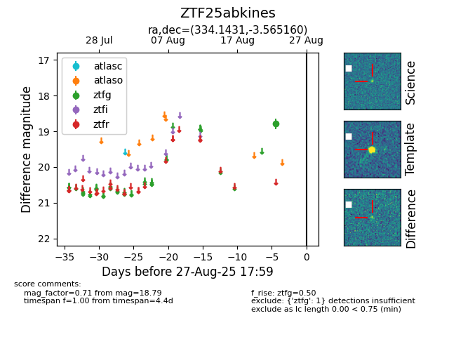

Target ZTF25abkines at 2025-08-27 17:59, see:
FINK: fink-portal.org/ZTF25abkines
Lasair: lasair-ztf.lsst.ac.uk/objects/ZTF25abkines
ALeRCE: alerce.online/object/ZTF25abkines
alt names
ZTF25abkines (ztf,fink)
coordinates:
equatorial (ra, dec) = (334.1431,-3.56516)
galactic (l, b) = (58.5810,-46.17229)
photometry
last ztfg=18.79
1 ztfg detections
